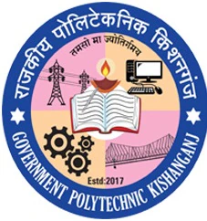

<style>
    p{
        font-size:  large;
    }
</style>


<header>
    <div class="container">
        <div class="logo">
            <a href="index.html">
                
            </a>
        </div>
    </div>
</header>
<link rel="stylesheet" href="style.css">
  <section class="hero small-hero">
    <div class="hero-content">
      <h1>About Government Polytechnic, Kishanganj</h1>
      <p>Empowering Future Engineers in Bihar Since 2016</p>
    </div>
  </section>

  <section class="section">
    <div class="container">
       
      <p>Government Polytechnic Kishanganj, established in 2016, is a premier technical institute in Bihar under the Department of Science & Technology. We are AICTE-approved and affiliated with Aryabhatta Knowledge University, Patna.</p>
    </div>
  </section>

  <section class="section dark">
    <div class="container">
      <h2>Our Campus</h2>
      <p>Located in Nezagachha, Block Thakurganj, the campus spans over 7 acres and features well-equipped workshops, computer labs, science labs, a library with 5,000+ books, boys’ & girls’ hostels, and staff quarters.</p>
    </div>
  </section>

  <section class="section">
    <div class="container">
      <h2>Courses Offered</h2>
      <ul class="features">
        <li>Diploma in Civil Engineering – 60 seats</li>
        <li>Diploma in Mechanical Engineering – 60 seats</li>
        <li>Diploma in Electrical Engineering – 60 seats</li>
        <li>Diploma in Electronics – 60 seats</li>
        <li>Diploma in Computer Science & Engineering – 30 seats</li>
      </ul>
    </div>
  </section>

  <section class="section dark">
    <div class="container">
      <h2>Our Vision</h2>
      <p>To be a center of excellence in engineering education, producing globally competent, ethically strong, and industry-ready professionals.</p>
    </div>
  </section>

  <section class="section">
    <div class="container">
      <h2>Principal’s Message</h2>
      <p>“At Government Polytechnic Kishanganj, we aim to deliver not just technical knowledge but also shape responsible citizens. Our faculty and facilities ensure students excel academically and grow personally.”<br><strong>- Mr Chitranjan Kumar, Principal</strong></p>
    </div>
  </section>